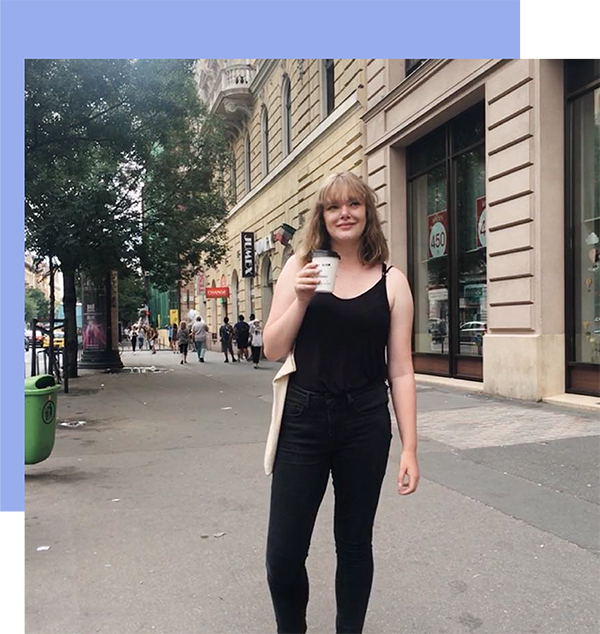

Hi. I'm Madelyn.
Learn about me.
I’m a junior web development major at Belmont University. I’m passionate about front-end development, but I’m always looking to learn more about the web in general. I’m currently taking classes in PHP, JQuery, and MySQL, as well as in web and interaction design. You can find out more about my skills on my github. Alternatively, I’ve completed several projects I’m proud of, including one for
Sable and Flea and one for Altitude Bags. I’m currently working on gaining skills in Wordpress, and am creating a theme for Uncommon Queens and for Kaitlin Barnett.
Outside of the internet, I’m passionate about travel, reading, history, and anything that combines the above.